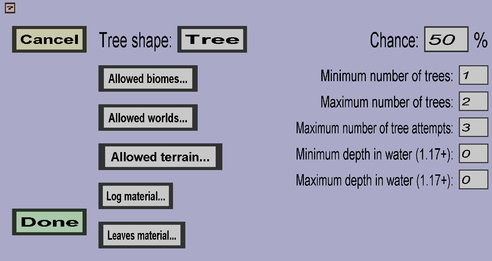

The tree generator edit menu can be used to edit tree generators. It should look like this:
A tree generator is a world generation process that will attempt to spawn some number of customized trees in some chunks. You can specify the shape of the tree, as well as which block(s) should be used for the logs and which block(s) should be used for the leaves (if applicable). Furthermore, you can specify in which biome(s) the tree can spawn and how many should be spawned. Each option will be explained in more detail below.
The tree shape determines the shape of the tree. In minecraft 1.17 and earlier, it also determines on which blocks the tree can be spawned (most tree shapes can only be spawned on grass or dirt).
The biomes in which the tree can be spawned. Note: the plug-in only ensures that the log of the tree will be in one of the allowed biomes, but the leaves may be placed in another biome if the log is very close to another biome.
The blocks on which the tree can be spawned. Note 1: when using a tree whose log is wider than 1 block, only 1 of the root log blocks needs to be above allowed terrain. Note 2: in minecraft 1.17 and earlier, Spigot will ensure that trees can not be spawned on unnatural terrain (for instance, they won't grow on stone or water). Including stone or water in the allowed terrain will not change this. In minecraft 1.18 and later, Spigot is much less strict and even allows you to spawn trees on top of the ocean (at least, if you add Water to the allowed terrain).
The block(s) that will be used to create the log of the tree.
The block(s) that will be used to create the leaves of the tree. If the tree shape doesn't have leaves, this will be ignored.
For each chunk, this is the chance that this generator will not skip the chunk.
These properties determine how many trees the generator will spawn on each chunk. For each chunk, the generator will determine the desired number of trees, which will be a random integer between the minimum number of trees and the maximum number of trees. The generator will keep doing tree spawn attempts until it has either spawned the desired number of trees or has reached the maximum number of attempts. In each attempt, the generator will pick a random X-coordinate and a random Z-coordinate, and attempt to place a tree on top of the highest non-empty block at these coordinates. The attempt will fail if: